เปลี่ยนความกังวลใจของครอบครัว เป็นความอุ่นใจที่สัมผัสได้ — ไม่ใช่แค่รถรับส่ง แต่คือ Personal Caregiver & Companion ที่อยู่เคียงข้างเสมือนคนในครอบครัวทุกย่างก้าว
ทีมงานสอบถามประวัติและวางแผนการเดินทาง ยืนยันข้อมูลผู้รับบริการและเวลานัดหมายล่วงหน้า ให้คุณมั่นใจตั้งแต่นาทีแรก
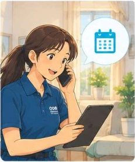
วิดีโอจำลองเส้นทางการดูแลผู้รับบริการ ตั้งแต่โทรนัดหมาย วางแผนการเดินทาง รับจากบ้าน เข้าพบแพทย์ จนถึงส่งกลับบ้านอย่างปลอดภัย คลิกเลือกดูแต่ละขั้นตอนได้ทันที
ทีมงานสอบถามประวัติและวางแผนการเดินทาง ยืนยันข้อมูลผู้รับบริการและเวลานัดหมายล่วงหน้า
ความเสี่ยงหลักไม่ใช่แค่การเดินทาง แต่คือสิ่งที่เกิดขึ้นหลังกลับบ้าน: จำคำแนะนำแพทย์ไม่ครบ ทานยาผิด และอาจพลาดนัดครั้งต่อไป เหตุการณ์เหล่านี้ส่งผลต่อการควบคุมโรคประจำตัวโดยตรง — การมีผู้ดูแลเคียงข้างจึงมีค่ามากกว่าแค่มีคนขับรถพาไป
ออกแบบมาเพื่อช่วยแบ่งเบาภาระของทุกครอบครัว โดยเฉพาะกลุ่มที่การไปโรงพยาบาลเป็นเรื่องยากลำบาก และนัดหมายที่เลื่อนไม่ได้
นัดโรงพยาบาลมักใช้เวลาครึ่งวันถึงเต็มวัน การลางานทุกครั้งกระทบทั้งหน้าที่การงานและรายได้ ให้ GO CARES เป็นตัวแทนความห่วงใย คุณทำงานได้อย่างสบายใจโดยมีผู้ดูแลมืออาชีพไปแทน
ลูกหลานอยู่ต่างจังหวัดหรือต่างประเทศ ต้องการคนที่ไว้ใจได้ไปโรงพยาบาลด้วย คอยดูแลพาเดิน เข้าห้องตรวจ และรายงานสถานะพร้อมรูปถ่ายให้ครอบครัวทราบตลอดวัน พ่อแม่ไม่เหงาและหมดห่วง
ต้องใช้วอล์กเกอร์ ไม้เท้า หรือนั่งรถเข็น ต้องการคนช่วยพยุงและช่วยขึ้น-ลงรถอย่างถูกวิธีตามหลักการยศาสตร์ ลดความเสี่ยงลื่นล้มหรือบาดเจ็บ ปลอดภัยตั้งแต่ออกจากบ้านจนถึงเตียงนอน
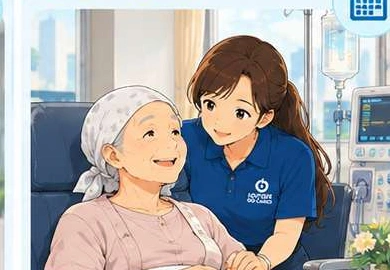
ผู้ป่วยฟอกไตสัปดาห์ละ 2-3 ครั้ง หรือรับยาเคมีบำบัดตามรอบ เป็นนัดหมายที่เลื่อนไม่ได้และร่างกายมักอ่อนเพลีย ครอบครัวสามารถจองเป็นแพ็กเกจประจำล่วงหน้าได้ทั้งเดือนอย่างต่อเนื่อง
คุ้มค่า เข้าถึงง่าย และโปร่งใส ตั้งแต่ไปรับที่บ้านจนถึงส่งกลับเข้าบ้านอย่างปลอดภัย ไม่มีค่าใช้จ่ายแอบแฝง
พาผู้สูงอายุไปพบแพทย์ ณ โรงพยาบาล
พาพบแพทย์ พร้อมรถรับ-ส่งเฉพาะตลอดเส้นทาง
ธุระส่วนตัว ทำธุรกรรม ช้อปปิ้ง นัดสังสรรค์
ให้คุณมั่นใจว่าคนที่คุณรักจะได้รับการดูแลอย่างเอาใจใส่ในทุกนาที ตั้งแต่ต้นจนจบ ครอบคลุมการดูแลครบทั้ง 6 ด้านสำคัญ
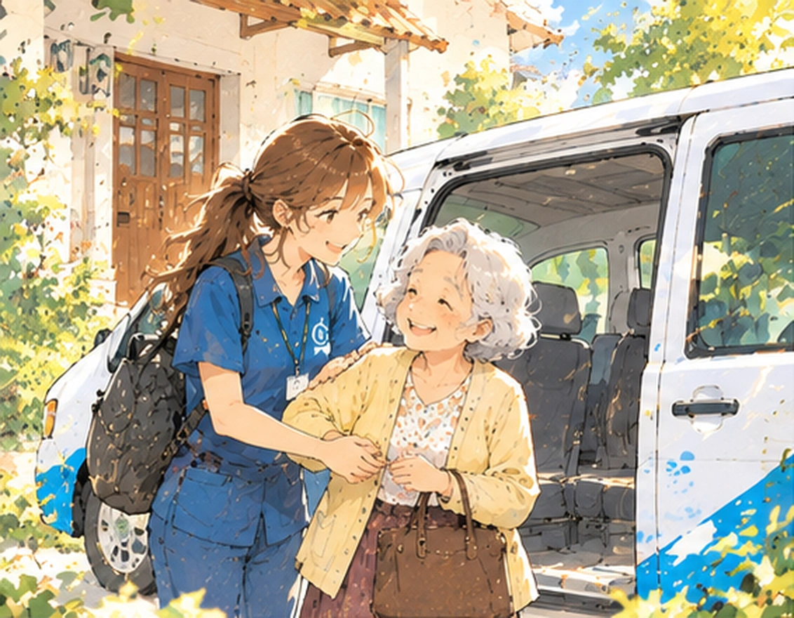
ขั้นตอนที่ 1ผู้ดูแลไปถึงบ้านตามเวลานัด ช่วยเตรียมตัวและช่วยขึ้นลงรถ จนพากลับถึงบ้านและดูให้เข้าบ้านเรียบร้อย
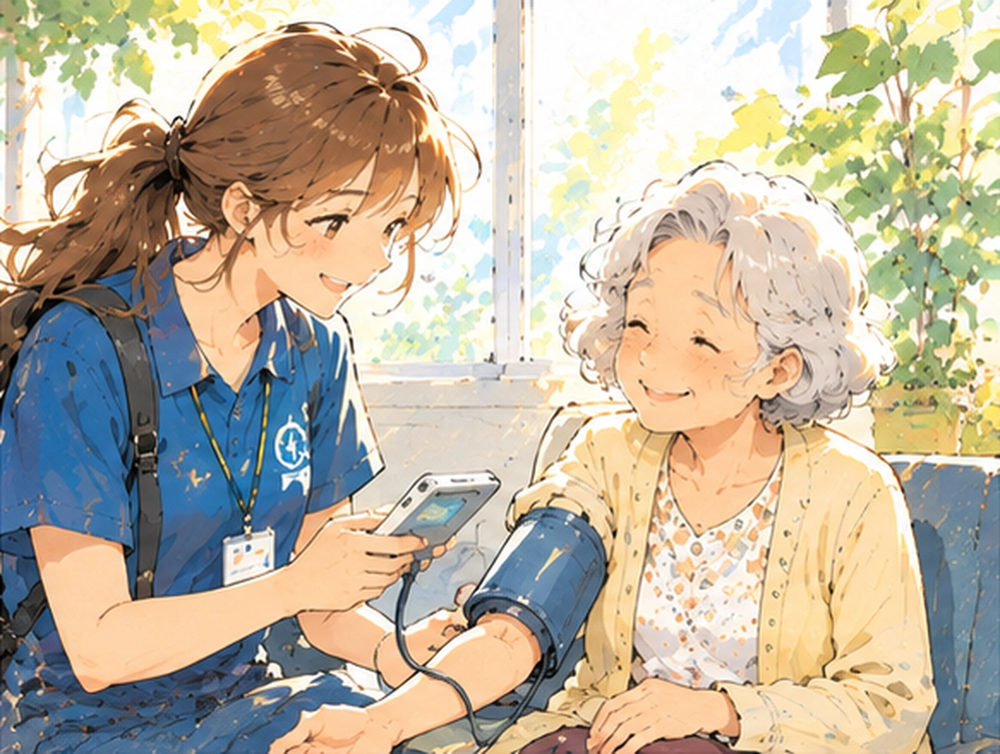
ขั้นตอนที่ 2วัดความดันโลหิต ชีพจร และประเมินความพร้อมเบื้องต้น หากพบสิ่งผิดปกติจะแจ้งครอบครัวและปรึกษาพยาบาลทันที
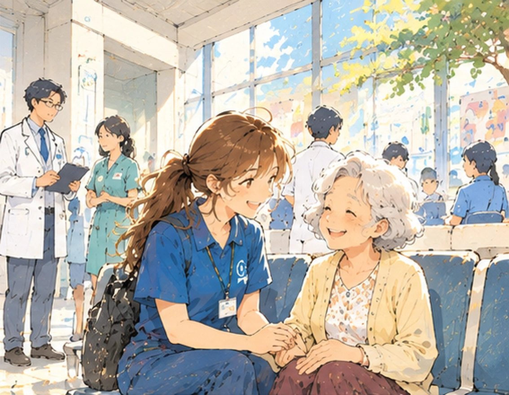
ขั้นตอนที่ 3จัดคิว ยื่นเอกสาร พาไปตามจุดต่างๆ และอยู่เป็นเพื่อนระหว่างรอ ไม่ปล่อยให้ผู้สูงอยู่นั่งรอตามลำพัง
เข้าห้องตรวจด้วยเมื่อได้รับความยินยอม จดสิ่งที่แพทย์สั่ง ถามซ้ำจุดที่ไม่ชัด และบันทึกวันนัดครั้งถัดไป
รับยาแทนได้ ทวนวิธีใช้ยากับเภสัชกร ถ่ายรูปฉลากยา และแจ้งชัดเจนว่ายาตัวไหนหยุด ตัวไหนเริ่มใหม่
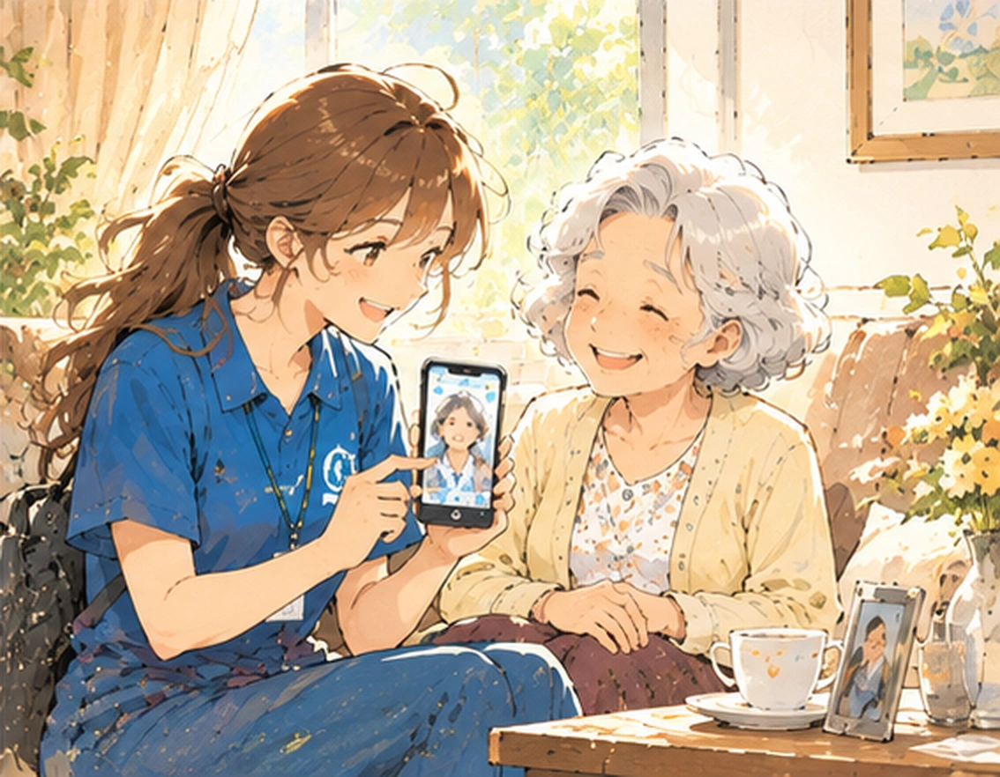
ขั้นตอนที่ 6อัปเดตเป็นระยะระหว่างวัน และสรุปทั้งหมดหลังกลับถึงบ้าน ครอบครัวที่ทำงานอยู่สามารถติดตามได้ตลอดเวลา
กรณีผู้ที่ต้องใช้รถเข็นพิเศษหรือเคลื่อนย้ายลำบาก และครอบครัวที่ไม่สะดวกจัดรถเอง ต้องใช้รถพยาบาล คิดค่าใช้จ่ายแยกจากค่าบริการตามระดับการดูแล
หากงานใช้เวลานานกว่าที่ประเมินไว้มาก หรือต้องการการดูแลระดับสูงกว่าปกติ ทีมจะแจ้งส่วนต่างให้ทราบก่อนเสมอ ไม่เรียกเก็บเพิ่มภายหลังโดยไม่แจ้งล่วงหน้า
ดูแลได้ทุกประเภทนัด ทั้งโรงพยาบาลรัฐและเอกชน รวมถึงคลินิกเฉพาะทาง ไม่จำกัดว่าต้องเป็นโรงพยาบาลใด สิ่งที่ต่างกันคือระยะเวลาที่ใช้ ซึ่งทีมงานจะประเมินให้ตอนจอง
ดูแลช่วงงดน้ำงดอาหาร พาไปตรวจครบทุกจุด และรับผลตรวจครบก่อนกลับ
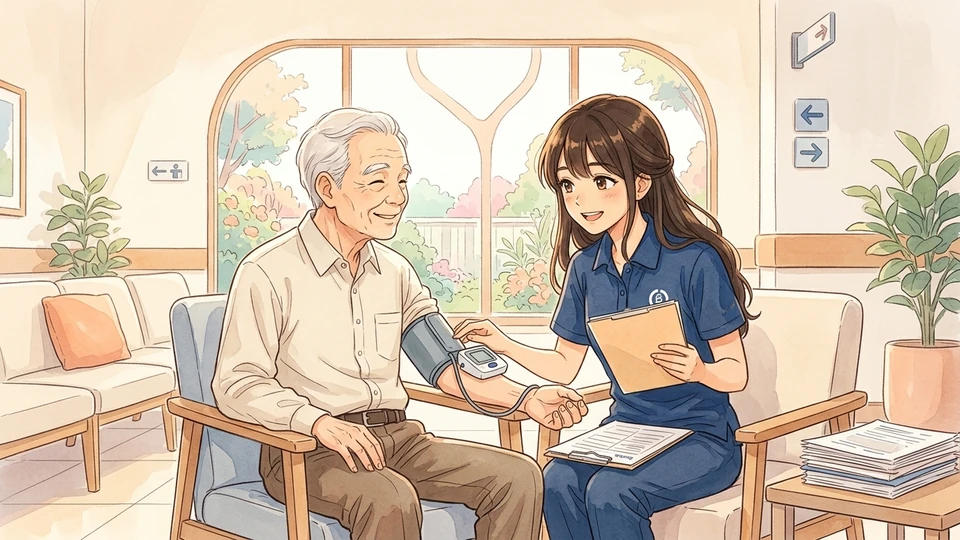
จดผลระดับน้ำตาลและความดัน ให้ครอบครัวเห็นแนวโน้ม และทวนยาใหม่ทุกครั้ง
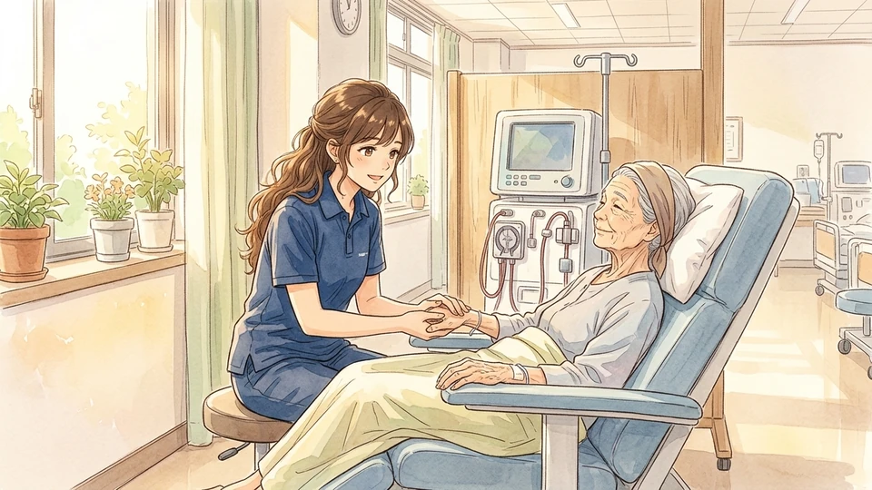
ไป-กลับตามรอบสัปดาห์ละ 2-3 ครั้ง สังเกตอาการอ่อนเพลีย และพากลับปลอดภัย
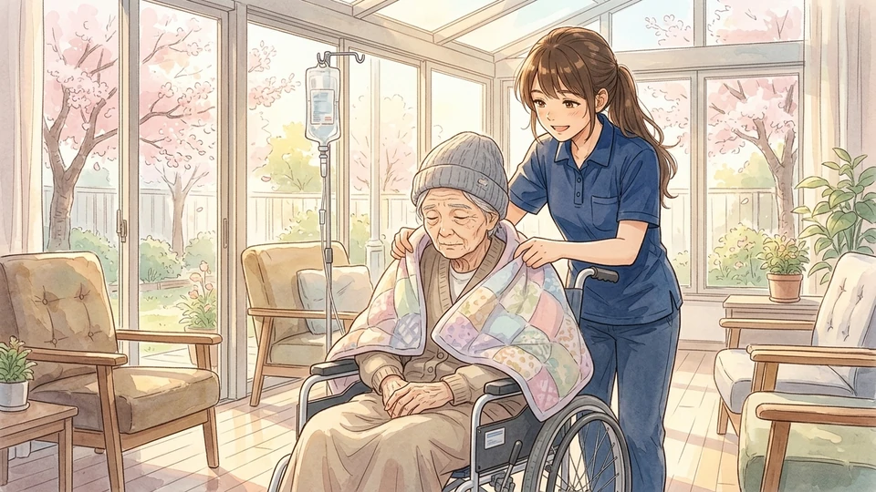
อยู่เป็นเพื่อนรอบยาว สังเกตอาการข้างเคียง และดูแลระหว่างเดินทางกลับ
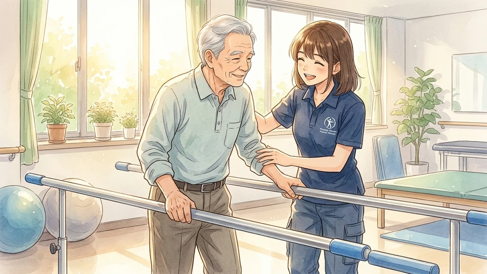
พาไปทำคอร์สฟื้นฟูต่อเนื่อง หรือพิจารณาเปลี่ยนเป็นกายภาพที่บ้านแทนได้
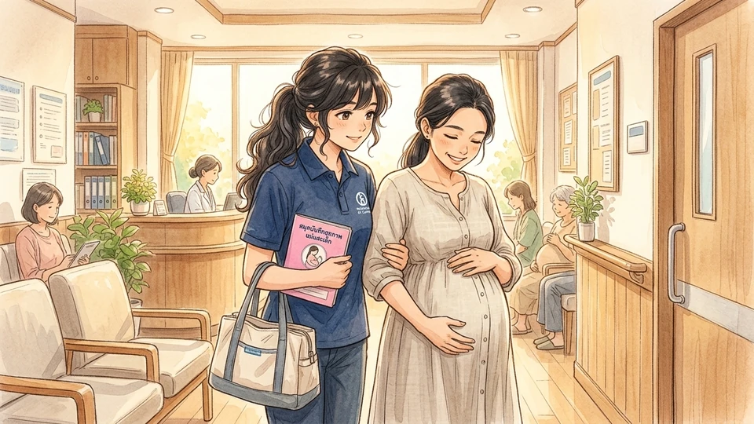
ระวังภาวะเสี่ยง ครรภ์เป็นพิษ ลื่นล้ม ประสานงานจุดตรวจและฟังผลแพทย์ครบถ้วน
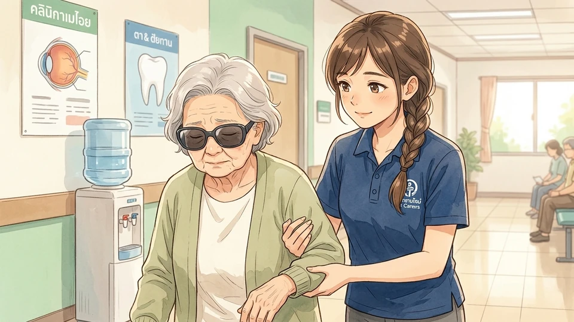
ดูแลหลังหัตถการที่มองไม่ชัดชั่วคราวหรือชาปาก ซึ่งเป็นช่วงที่เดินทางกลับเองลำบาก
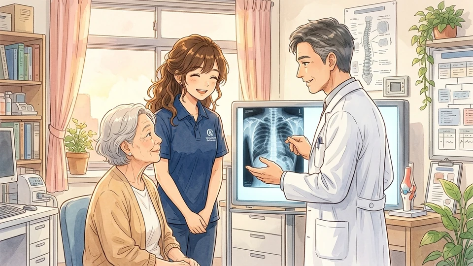
กระดูกและข้อ ระบบประสาท ทางเดินปัสสาวะ ฯลฯ จัดผู้ดูแลที่เหมาะสมกับอาการ
คลิกเลือกอำเภอที่ท่านพักอาศัย เพื่อดูรายละเอียดระยะทางและการเดินทาง
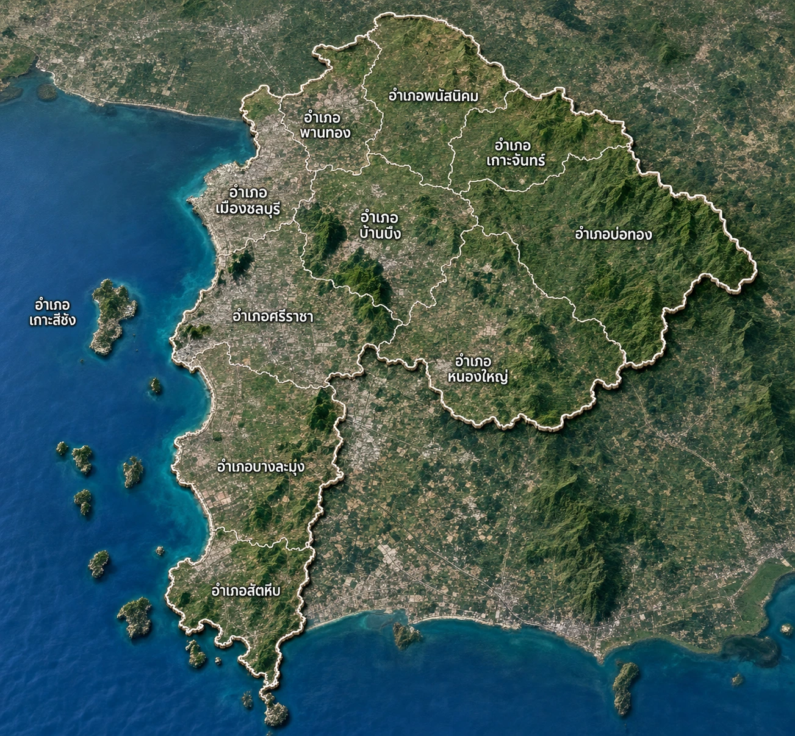
ครอบคลุมใจกลางเมือง โรงพยาบาลเอกชล 1 และเอกชล 2 รถรับ-ส่งถึงบ้านอย่างรวดเร็วภายใน 15-20 นาที
ฟรีระยะทาง 10 - 30 กม. ตามแพ็กเกจที่เลือกที่มักลืมกันมากที่สุดคือยาที่กินอยู่ ซึ่งแพทย์จำเป็นต้องเห็นก่อนสั่งยาใหม่เพื่อไม่ให้ยาตีกัน คลิกเพื่อตรวจเช็กความพร้อม:
วางไว้ในจุดที่หยิบง่าย และแจ้งผู้ดูแลว่าอยู่ตรงไหน
ระบุแผนก ชื่อแพทย์ และเวลานัด สามารถถ่ายรูปส่งมาทาง LINE ตอนจองได้
รวมวิตามินและอาหารเสริม จัดใส่ถุงเดียวไปด้วย เพื่อให้แพทย์เห็นครบก่อนสั่งยาใหม่
บัตรทอง, ประกันสังคม, ข้าราชการ หรือประกันสุขภาพเอกชน แจ้งล่วงหน้าเพื่อยื่นเอกสารได้ถูกช่อง
เบอร์ญาติที่สามารถตัดสินใจแทนได้ เผื่อกรณีที่แพทย์ต้องการปรึกษาครอบครัวโดยตรง
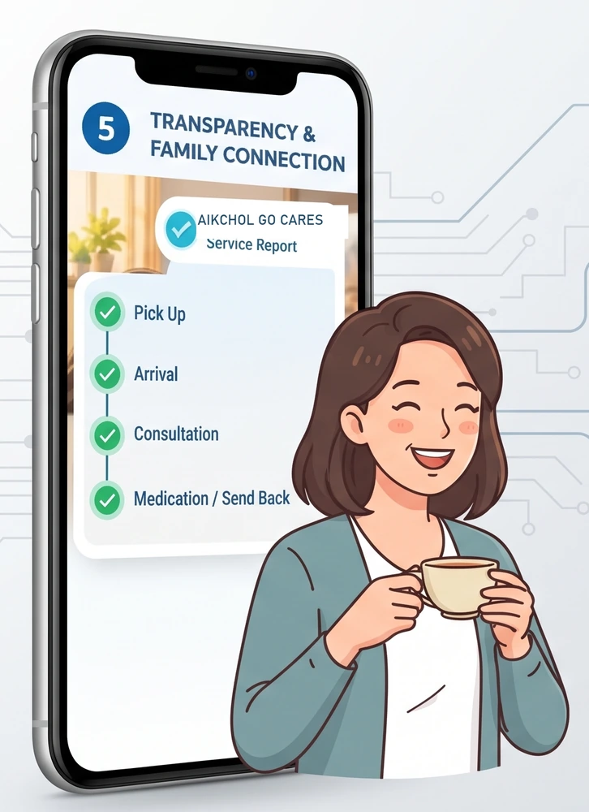
แม้คุณต้องทำงานหรือติดประชุม คุณจะไม่พลาดทุกช่วงเวลาสำคัญของผู้ใหญ่ที่คุณรัก ด้วยการรายงานสดผ่าน LINE และสรุปรายงานกิจกรรมฉบับสมบูรณ์หลังจบเคส
ตอบทุกข้อสงสัยเกี่ยวกับบริการดูแลผู้ป่วยและผู้สูงอายุจากบ้านสู่โรงพยาบาล
มอบความอุ่นใจ ความปลอดภัย และรอยยิ้มให้คนที่คุณรัก... ให้ GO CARES เป็นตัวแทนความห่วงใยในทุกย่างก้าว
เริ่มต้นวางแผนการดูแลสุขภาพที่ดีกว่าเดิม ปรึกษาทีมงานมืออาชีพจากโรงพยาบาลเอกชลได้ฟรี ไม่มีค่าใช้จ่ายล่วงหน้า
กรอกข้อมูลเพื่อให้เจ้าหน้าที่ติดต่อกลับเพื่อยืนยันนัดหมายและประเมินการเดินทาง (ไม่มีค่าใช้จ่ายล่วงหน้า)